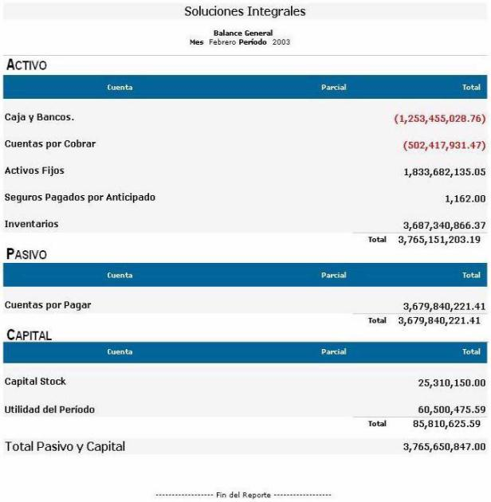

Con esta consulta se obtiene un Balance General de la empresa en una determinada oficina, período, mes, con opción de seleccionar el nivel de detalle del Balance a consultar. La moneda será la definida como moneda local. Luego de indicar cada parámetro debe hacer click en el botón Consultar.
Figura 1. Consulta balance general.
Si no selecciona ningún parámetro se generará el reporte con los parámetros predeterminados. Una vez obtenido el reporte puede ser impreso por medio del icono  que se encuentra en la esquina superior derecha de la pantalla.
que se encuentra en la esquina superior derecha de la pantalla.

Figura 2. Reporte consulta Balance General.